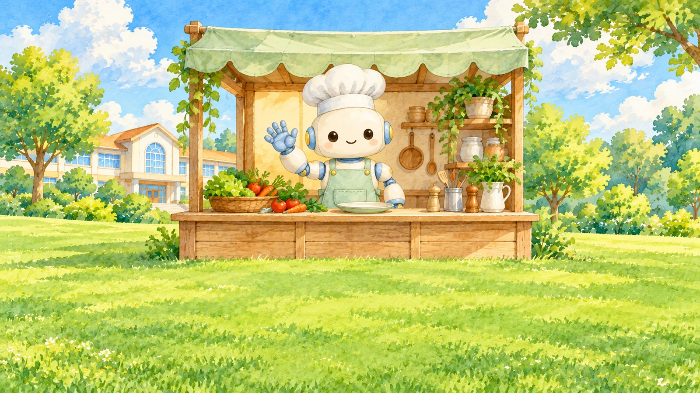
5학년 7~8차시 · 블록 수업맛있는 코딩과
맛있는 코딩과
로봇 셰프 레시피
해결단 4호 미션


해결단 4호 미션
‘맛있는 코딩’을 즐기며 요리를 완성하는 순서를 찾아보고, 다른 모둠도 같은 순서로 이해할 수 있는 4컷 로봇 셰프 레시피를 만들어 봅시다.
순서쌤해결단 여러분, 로봇 셰프 긴급 주문이 왔어요! 요리를 어떻게 알려 줘야 할까요?
오늘의 길
- 7차시
- 도입로봇 셰프 긴급 주문
- 활동1과제 고르고 단계 나누기
- 8차시
- 활동24컷 로봇 셰프 레시피
- 정리배운 내용 정리
순서쌤두 차시 동안 이 길을 따라가요. ‘맛있는 코딩’ 보드게임과 빈 A4 한 장을 준비해요.
오늘 준비물

- 선생님‘맛있는 코딩’ 보드게임 1세트, 요리 카드 1장
- 모둠보드게임 1세트, 빈 A4 1장, 연필·색연필
- 나로봇 셰프 활동지, 필기구
- 약속게임은 차례를 지키며 함께 의견을 나눠요
로봇 셰프 긴급 주문!
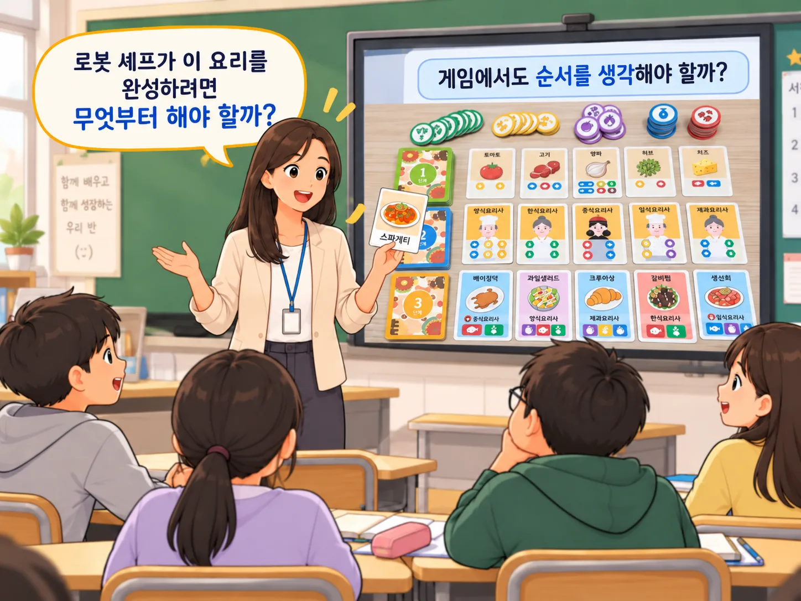
순서쌤로봇 셰프가 이 요리를 완성하려면 무엇부터 해야 할까요?

말랑쌤음… 순서를 모르면 헷갈릴 것 같아요.
영상 속 게임 장면
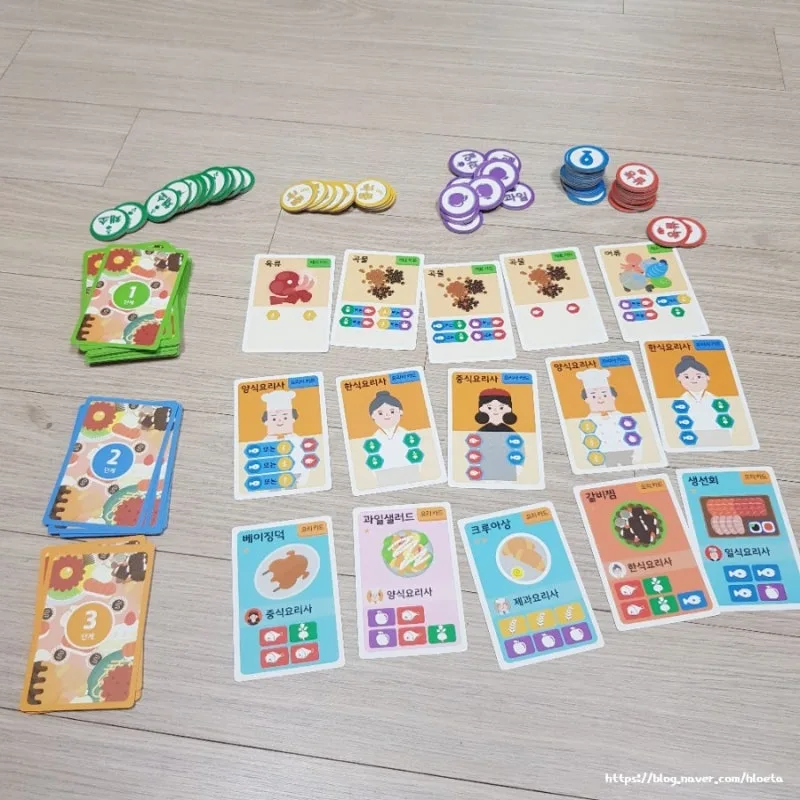
순서쌤영상에서 재료·요리사·요리 카드가 어떻게 이어지는지 살펴봐요.
선생님이 미리 준비한 영상을 함께 봐요.
먼저 예측해요
‘맛있는 코딩’ 게임에서도
순서를 생각해야 할까요?

비트쌤영상 속 게임 장면을 떠올리며 골라 봐요. 게임에서 직접 확인해요.
바로 답을 말하지 않고 게임에서 직접 확인해 봐요.
숨은 그림 찾기: 게임 속 순서의 단서
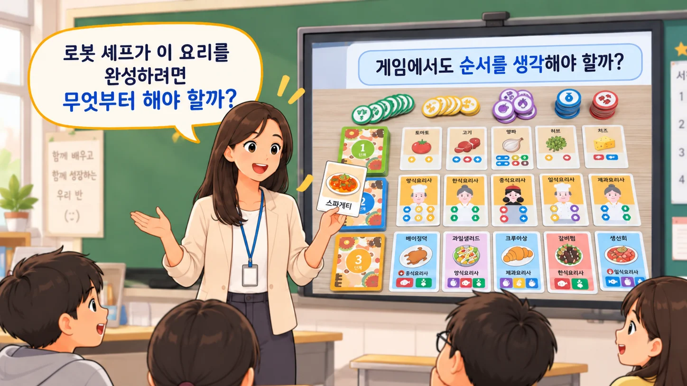
순서쌤게임판에서 재료, 요리사, 요리 카드를 찾아 손가락으로 가리켜요. 그림을 누르면 하나씩 나와요.
과제 고르고 단계 나누기
모둠별로 ‘맛있는 코딩’을 충분히 하며 요리를 완성해 봐요.
게임 중에는 기록지를 쓰지 않고 게임에 몰입해요.
비트쌤규칙은 게임 목표, 내 차례, 요리 완성 방법만 먼저 알아봐요. 첫 차례는 함께 해 봐요.
카드 뒤집기: 게임 규칙 세 가지
순서쌤먼저 뒷면을 예측하고 카드를 눌러 뒤집어 봐요.
둘 중 하나: 어느 쪽이 먼저일까?
?
순서쌤샌드위치를 만들 때 어느 쪽이 먼저일까요? 순서가 바뀌어도 될까요?

규칙쌤게임에서도 순서가 바뀌면 어떻게 될까요?
완성한 요리 되짚기
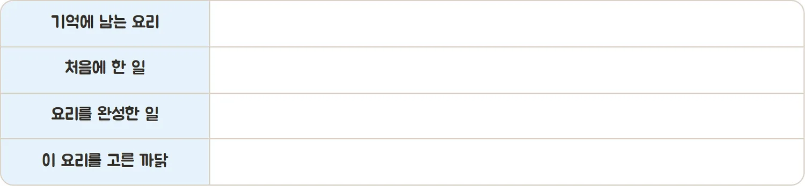
활동지 1쪽 ①
순서쌤게임이 끝난 뒤, 요리를 완성했을 때 ‘우리가 어떤 순서로 했지?’ 모둠 안에서 짧게 되짚어 봐요.
말랑쌤기억에 남는 요리 하나를 골라 활동지에 처음에 한 일과 완성한 일을 써요.
7차시 끝! 기억에 남는 요리 하나
새싹쌤다음 시간에는 그 요리를 4컷 로봇 셰프 레시피로 만들어요.
4컷 로봇 셰프 레시피
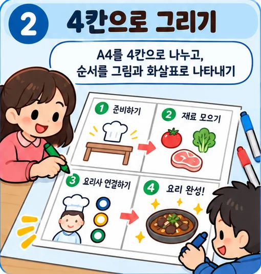
빈 A4 한 장을 반으로 두 번 접어 4칸을 만들고, 요리가 완성되는 순서를 그림과 화살표로 나타내요.
순서쌤7차시에 기억에 남은 요리 하나를 골라요. 한 칸에 핵심 행동 한 가지씩 그려요.
순서 맞추기: 4컷 활동 흐름
활동 순서대로 카드를 눌러요.
순서쌤어떤 차례로 할지 먼저 예측하고 카드를 눌러 봐요. 어려우면 활동 안내 그림을 다시 봐요.
체험: 로봇 셰프 레시피 고치기
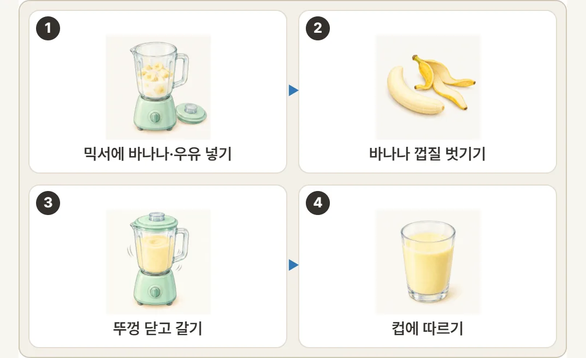
① 처음: 4컷 레시피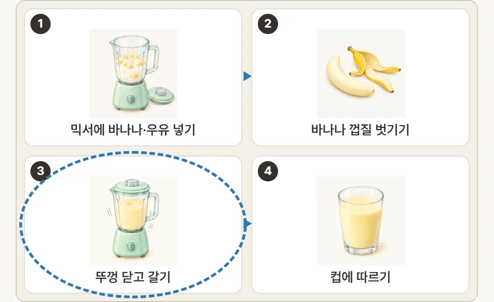
② 헷갈릴 곳에 동그라미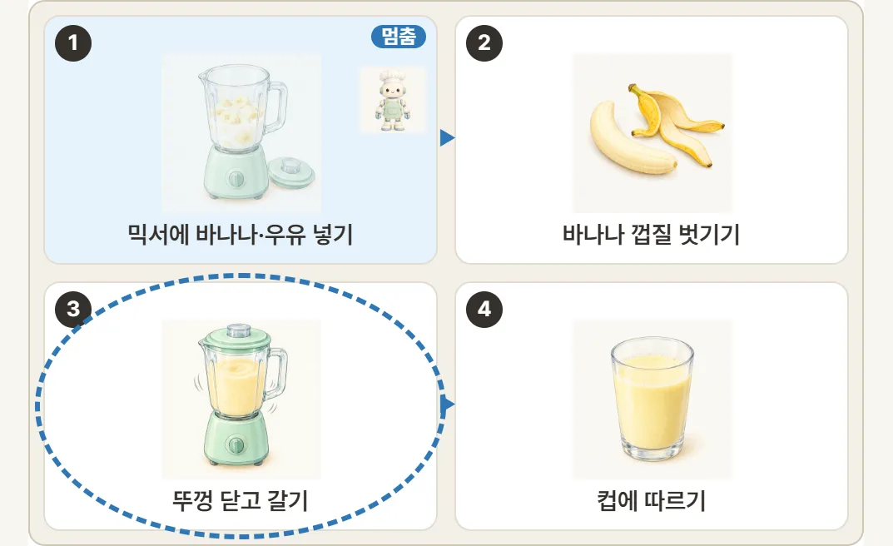
③ 로봇 셰프가 멈춘 곳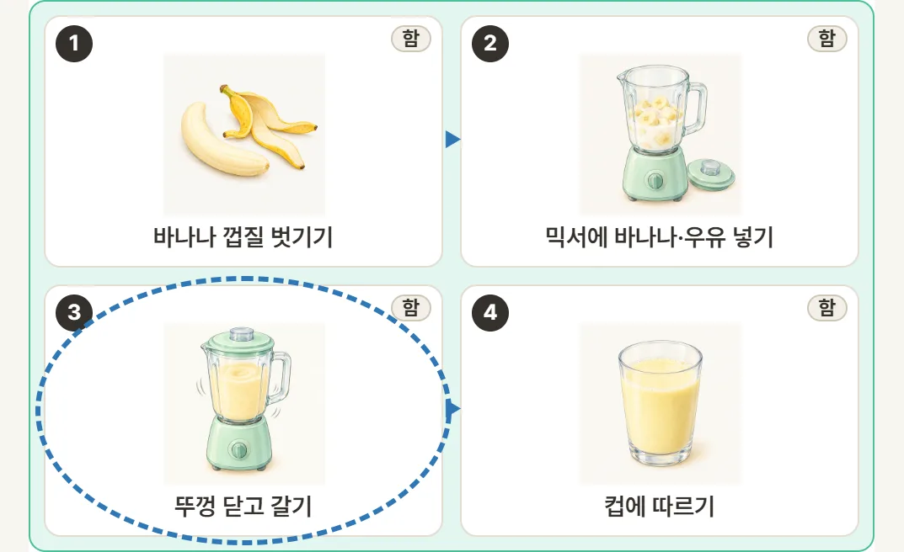
④ 순서를 고쳐 완성체험 열기 ↗https://edudaum.vercel.app/B04/
비트쌤고르기, 그리기, 바꾸어 보기, 고치기 차례로 해요. 로봇 셰프가 어디서 멈출지 먼저 동그라미를 쳐 봐요.
4칸에 그려 보기
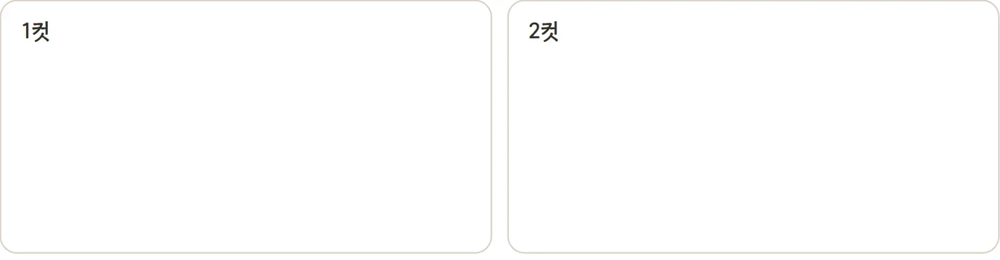
순서쌤A4의 4칸에 한 가지 행동만 그림, 화살표, 숫자로 나타내요. 활동지 칸은 4칸 모양을 보여 주는 예시예요.

데이터쌤글자보다 그림으로 순서가 보이게 해요.
활동지 1쪽 ② 4칸 모양 보기
B04 · 17 / 23먼저 예측해요: 옆 모둠은 이해할까?
옆 모둠이 내 그림만 보고
같은 순서로 이해할 수 있을까요?
비트쌤A4를 바꾸고 그림만 보고 어떤 순서인지 이야기해 봐요.
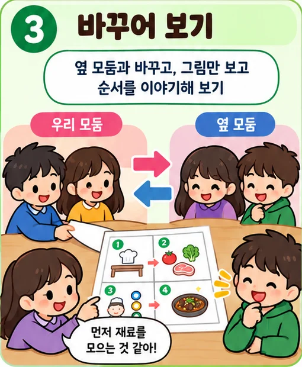
헷갈리는 한 곳에만 동그라미 표시해요.
바꾸어 보고 고치기
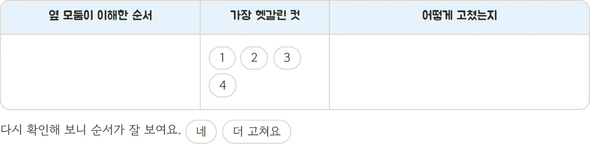
순서쌤옆 모둠이 이해한 순서, 헷갈린 컷, 고친 방법을 써요.
규칙쌤순서가 잘 보이는지 다시 확인해요. 빨리 끝나면 알기 쉬웠던 표현 한 가지를 찾아봐요.
활동지 2쪽 ① 아래 줄 포함
B04 · 19 / 23발표: 처음 헷갈린 곳, 어떻게 고쳤나요?

순서쌤2~3개 모둠이 ‘처음 헷갈린 곳, 어떻게 고쳤는지’를 한 가지씩 발표해요.
말랑쌤우리는 화살표와 숫자를 더해서 순서를 분명하게 고쳤어요.
좋은 알고리즘은?
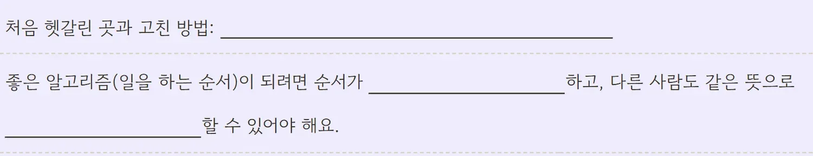
활동지 2쪽 ②
- 처음 헷갈린 곳과 고친 방법을 한 문장으로 써요.
- 좋은 알고리즘은 순서가 분명하고, 다른 사람도 같은 뜻으로 이해할 수 있어야 해요.
- 아래 두 칸으로 내 레시피를 스스로 점검해요.
스스로 점검해요
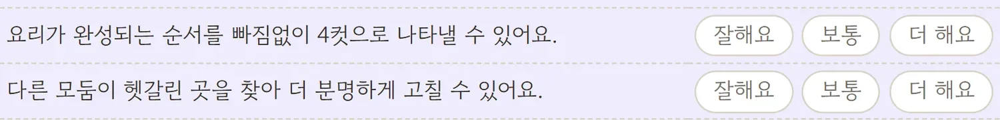
순서쌤‘잘해요, 보통, 더 해요’ 중 내 마음에 맞는 곳에 표시해요.
데이터쌤잘한 점도, 더 하고 싶은 점도 괜찮아요.
활동지 2쪽 ② 아래 칸
B04 · 22 / 23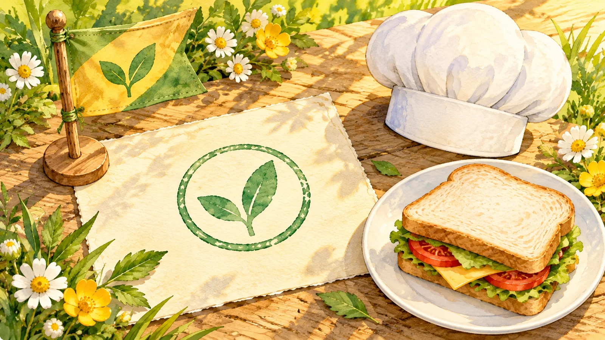
미션 해결!
해결단 4호 미션 해결 보고
순서쌤로봇 셰프 주문 해결! “원하는 재료가 없다면?”처럼 상황에 따라 달라질 때는 갈림길이 필요해요.
다음 해결단 5호 미션: 순서도 따라가며 끝 맞히기